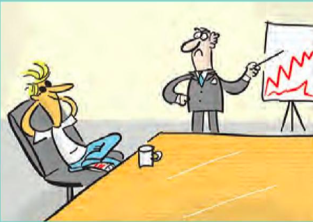
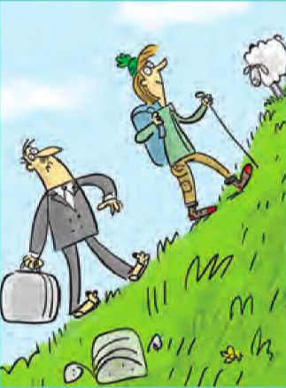

Look at the cartoons and discuss. What are the problems? Choose the correct alternatives below.
In an office, men usually (wear/are wearing) dark suits, ties and shoes, but now Sam (wears/'s wearing) jeans, a T-shirt and trainers. He (doesn't wear/isn't wearing) a tie. Another problem is that today he (wears/'s wearning) sunglasses and most businessmen (don't wear/aren't wearing) sunglasses at work.
Complete the information about the second cartoon.
Walkers _____ (not) usually ______ a suit; they usually ________ trousers and walking jackets. Today, Jenny ________ boots, but her boyfriend _______ sandals - dangerous on a country walk. Another problem is that he ________ (not) a backpack now, he ____ a suitcase!
What clothes do you usually/never wear for: